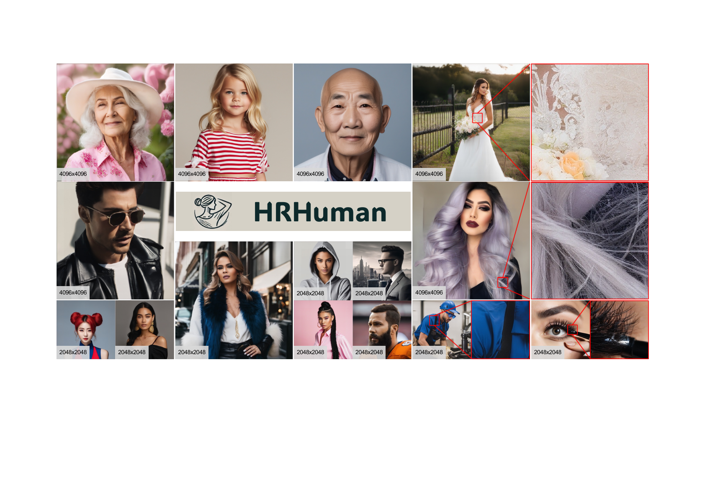

HRHuman
Tuning-Free Higher-Resolution Human Image Generation
Patch-wise generation gains detail but can fragment the human body. HRHuman uses prompt discretization and template-guided prompt filtering to align each local denoising region with the correct body semantics.
PreserveGlobal anatomyControlRegion-aware detail
Open interactive demo ↗

2K · 4K · Higher resolution